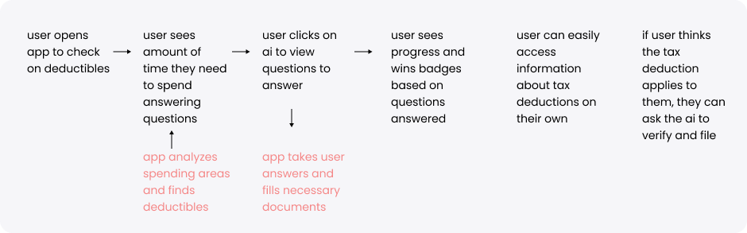

mooni.ai
A UI/UX prototype for an AI tax assistant
A UI/UX prototype for an AI tax assistant
How might we simplify the tax filing process and make it easy for mooni.ai users to save on taxes?
Date: Jan - Feb 2023
Skill: UX Design, Interaction Design, Visual Design, Prototyping, Usability Testing, Wireframe
Tools: Figma, Procreate, Adobe Illustrator, Midjourney


Like a personal accountant, mooni.ai is an app which uses artificial intelligence trained on the IRS tax code to find every single tax refund and credit that's available to the user.
For this project, I worked on product design for the entire user-facing side of mooni.ai directly with their founders.
Based on user interviews, here are some key findings and pain points identified in regards to the tax filing process:
Based on competitive analysis with well known tax preparation softwares such as TurboTax and H&R Block, here are some key findings:
In collaboration with the founders, we started ideating based on their vision for the app and I created a user flow to translate the user research into their product.


We worked with a couple different visual designs for this app. Originally, we created b&w visuals for the first iteration of the app. After creating the initial mockup, the founders decided to pivot to a more colorful design.
The founders chose instead a colorful gradient based theme against a light background for main navigation pages and a dark theme for the AI part of the app, which after fitting wireframes with, we ultimately converged on for the final prototype.
After deciding on the visual design direction, the founders needed a fully working prototype, no static buttons. So, I polished the designs and created the prototype. (over 120 pages!)